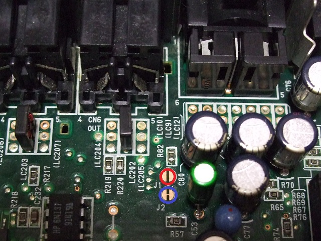
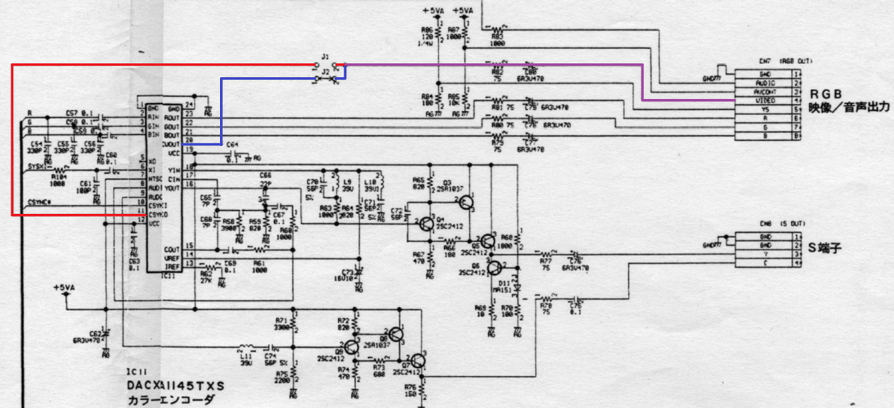
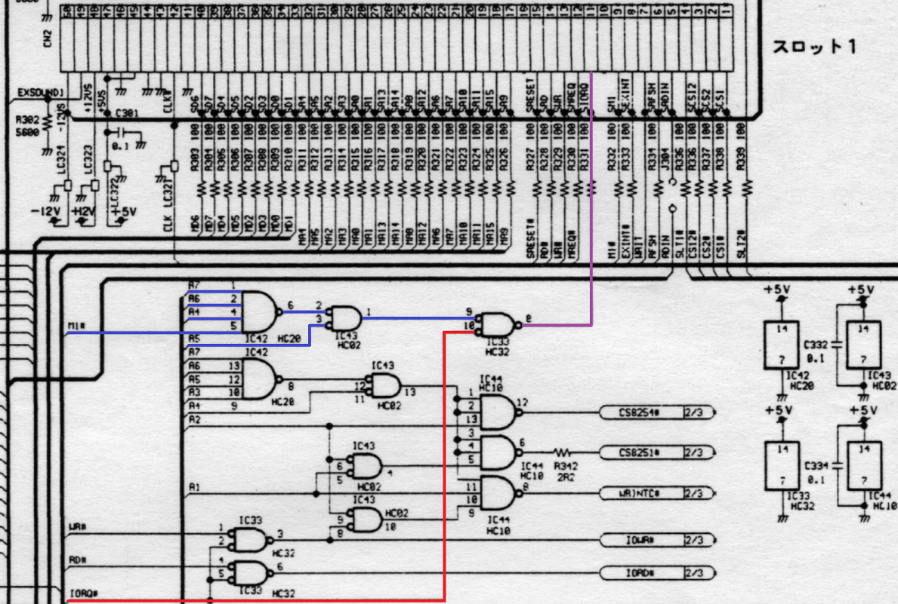
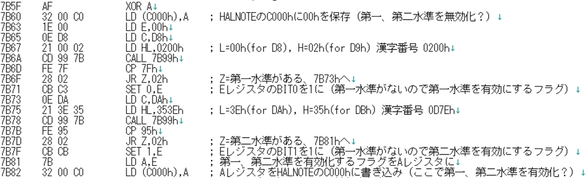
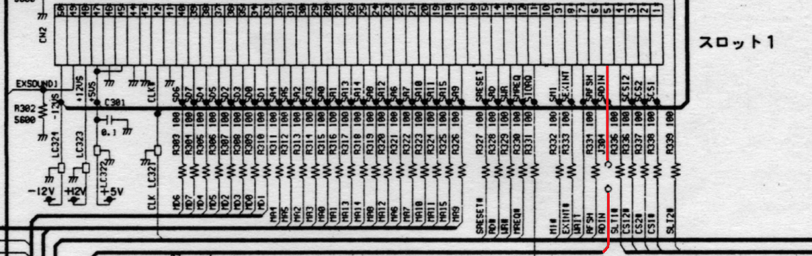
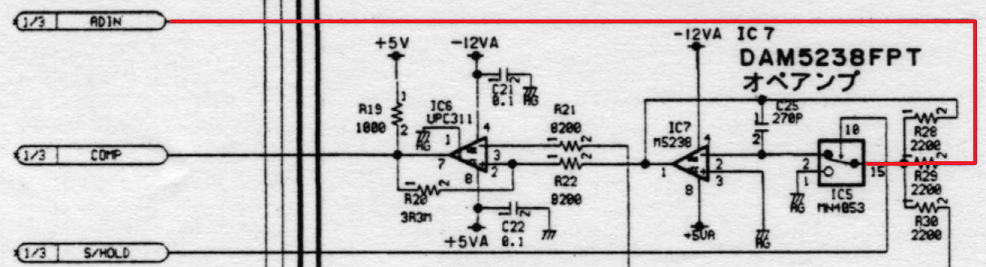

FS-A1GTの謎
Panasonicからでた最後のMSX turboR FS-A1GTには特別な仕様があったりします。
FS-A1GTではRF出力、Compositeビデオ出力、音声出力の端子がなくなりました。RF出力は廃止、CompositeビデオはRGB端子の4ピン、音声は同じくRGB端子の2ピンから出力されており、そちらを使うことになります。2ピンは元々音声出力なのですが、4ピンは元々C-SYNC信号です。Compositeビデオ信号はC-SYNC信号として使えるのですが、RGB信号に対するノイズになったり、C-SYNCからH-SYNC/V-SYNCを作る回路を使っている場合に不具合を起こす可能性があります。
FRSさんの情報によると、そのためかFS-A1GTの基板上にRGB端子の4ピンに対してFS-A1STまでと同様C-SYNCを出力することができるジャンパが準備されています。J1をショートすることでRGB端子の4ピンにC-SYNCがつながりますが、そのままだとCompositeビデオもつながっていますので、J2をカットする必要があります。もちろん、これをやってしまうとFS-A1GTに付属しているビデオケーブルでの映像出力ができなくなります。音声出力は問題ありません。


FS-A1GTの特殊な仕様として、外付け漢字ROMが使用できないというものが挙げられます。
回路図を追ってみるとHW的にDisableにされていました。青のラインでIOアドレスのDxh、赤のラインが/IORQを指定してるのでスロットに対するI/O D0-DFhのアクセスがすべて禁止されています。ちなみにFS-A1STにこのような回路は存在しません。

ちなみにI/Oマップ上、D0-DFhの割り当ては以下のようになっています。D0-D7hにフロッピーディスクコントローラがありますが、ディスクデバイスが必ずI/Oアクセスをする訳ではありません。各種SDカード対応カートリッジ、MEGA-SCSIや似非RAMディスク等はI/Oアクセスしていませんし、手持ちの外付けフロッピーディスクドライブも問題なく使用できました。使用できないのはごく一部のフロッピーディスクドライブだけだと思われます。
| I/Oアドレス |
デバイス |
| D0-D7h |
フロッピーディスクコントローラ |
| D8-D9h |
漢字ROM 第一水準 |
| DA-DBh |
漢字ROM 第二水準 |
| DC-DFh |
システム予約 |
この謎について裕之さんから興味深い情報を頂きました。FS-A1STにおいて、Z80モードかつ内蔵漢字ROMが有効の時に漢字ROMへアクセスするとスロットに変なアドレスへのI/Oアクセスが発生するようです。変なアドレスとは恐らく内蔵マスクROMの漢字データが入っているアドレスで、このためにスロットに漢字ROMに限らずI/Oデバイスが挿さっている時にアドレス競合が発生する可能性があるのこと。R800モードでも変なアドレスが出力されるのですが、/IORQが出ないため問題が発生しません。そのため、FS-A1GTではHW的にDisableにしているようです。
| 本体 |
内蔵漢字ROM |
Z80 |
R800 |
| FS-A1GT |
Enable |
HWでDisable |
HWでDisable |
| Disable |
HWでDisable |
HWでDisable |
| FS-A1ST |
Enable |
変なアドレスへのI/Oアクセスが発生 |
/IORQがでないので問題なし |
| Disable |
外付け漢字ROMに正常アクセス |
外付け漢字ROMに正常アクセス |
余談ですがFS-A1GTで外付け漢字ROMが使えない話に関連して、HALNOTE内蔵の漢字ROMはFS-A1STでも使用できないという話もありました。ゆうくんさんにご協力いただき確認を進めたところ、HALNOTE内でも初期化の際に他の漢字ROMの有無を確認し、他に漢字ROMが無い場合のみHALNOTE内蔵の漢字ROMを有効にしていました。そのため、FS-A1ST/GTに限らず漢字ROMを内蔵している機種ではHALNOTEの漢字ROMは使用できません。

先程、FS-A1GTのスロット回りの回路をみてみましたが、妙な回路があることが分かります。スロットの5ピンは通常Reservedですが、J304でADINなる信号がつながるようになっています。

回路を追っていくと、どうもPCM入力のコンパレーターにつながっていることまでは分かるのですが、実際にどのように機能するかについては私のスキルでは分かりませんでした。

このピンを使いそうな外付けカートリッジも無かったと思いますので、謎な回路です。
元ネタとして参考にさせて頂いたFRSさん(Video関連), 裕之さん、ゆうくんさん、BABAXさん、にがさん（漢字ROM関連）に感謝致します。
お約束ですが、この噂を見て改造などを行い故障やその他問題が発生しても責任は負えません。各自の責任において情報を広く集めて行うことをおすすめします。